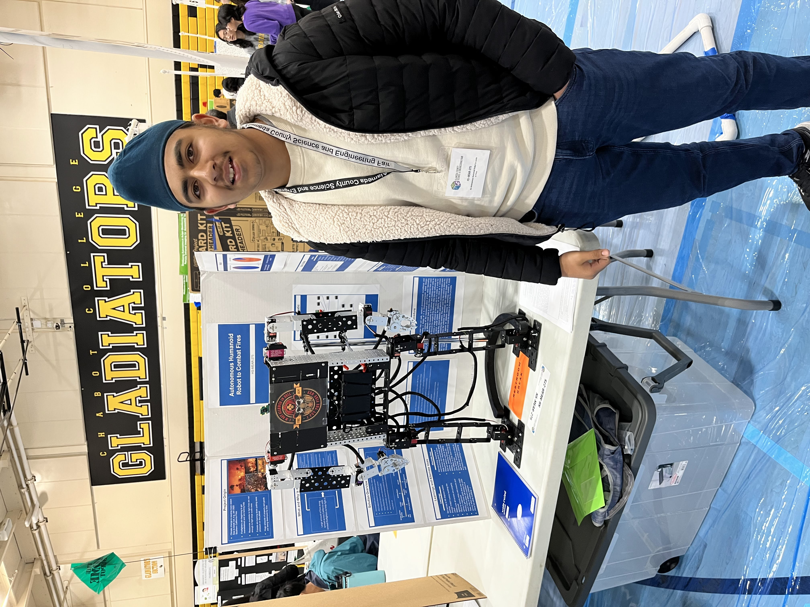
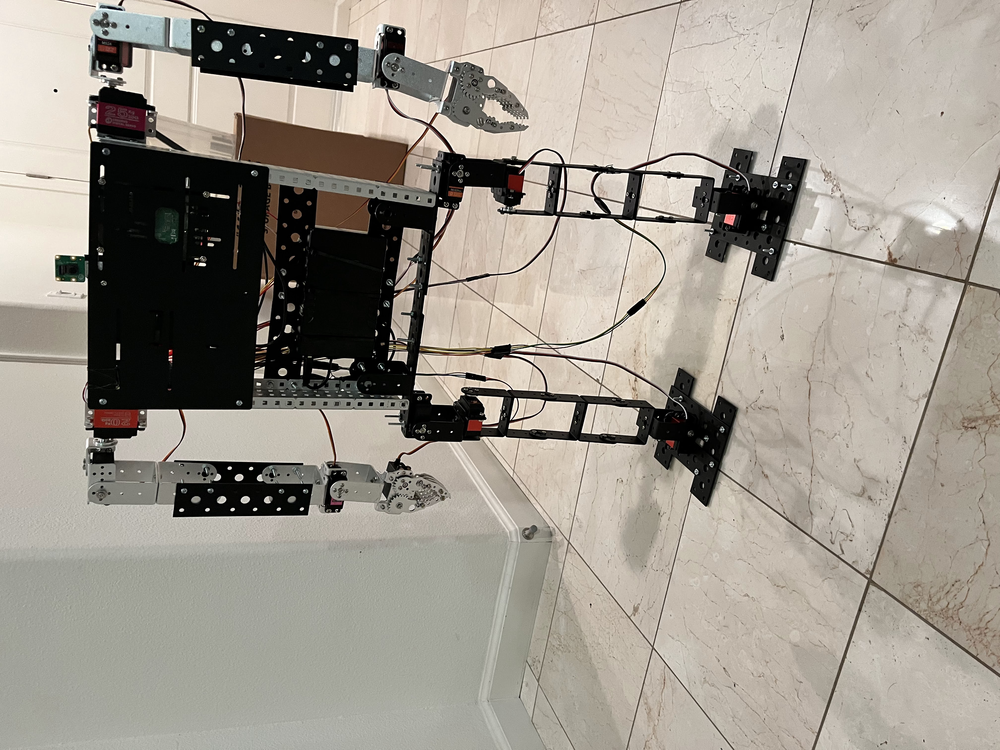
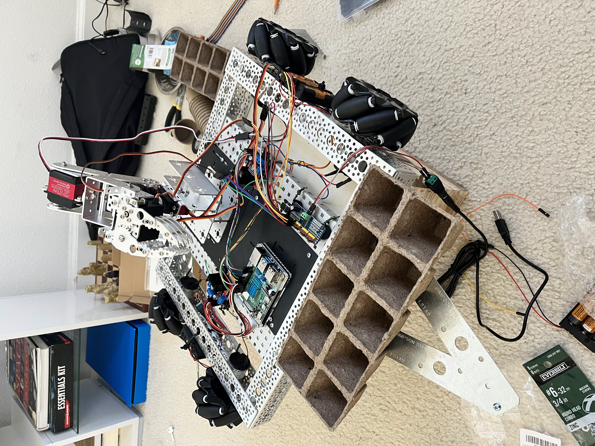
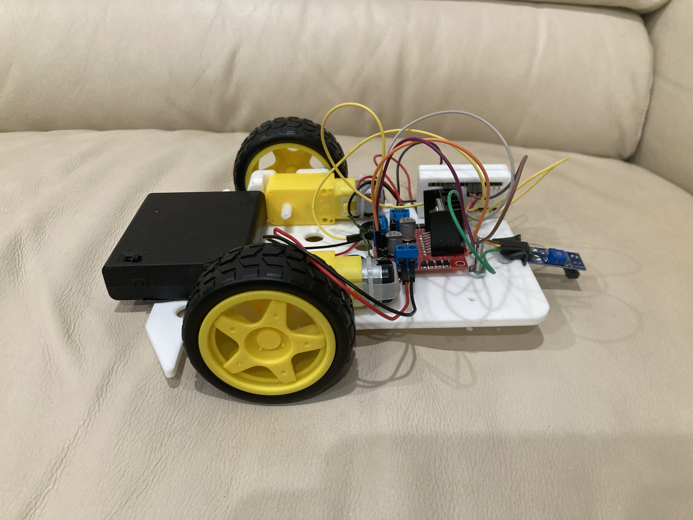
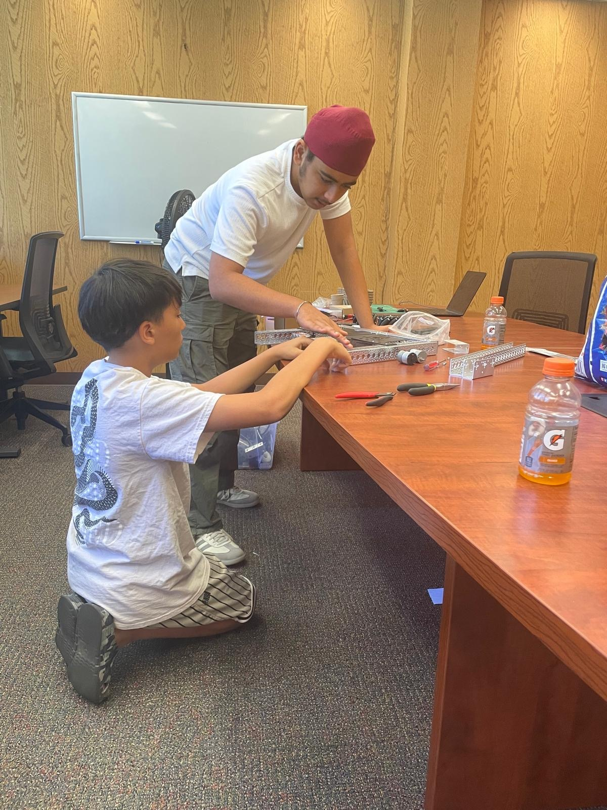
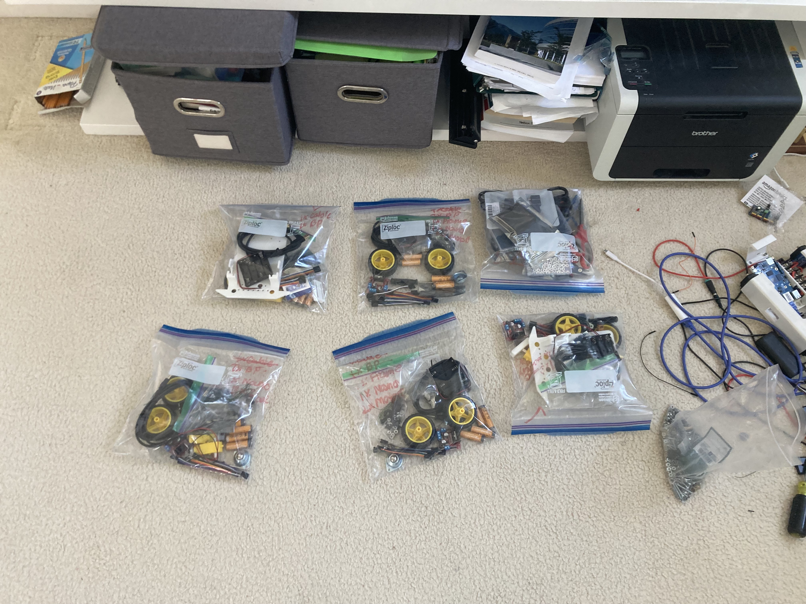
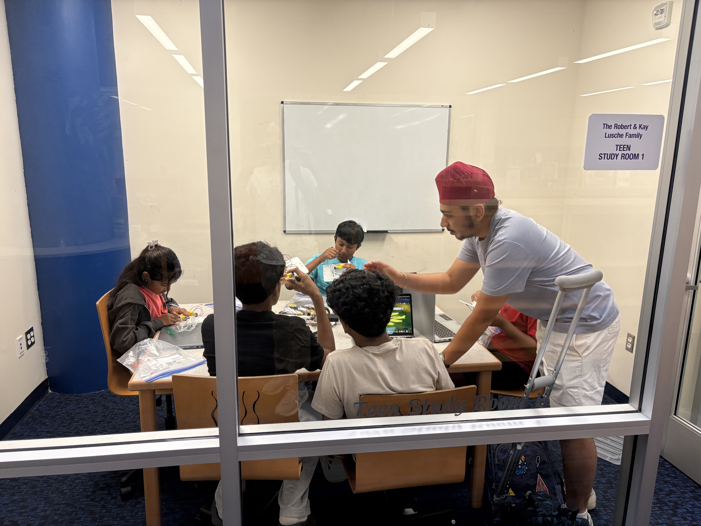
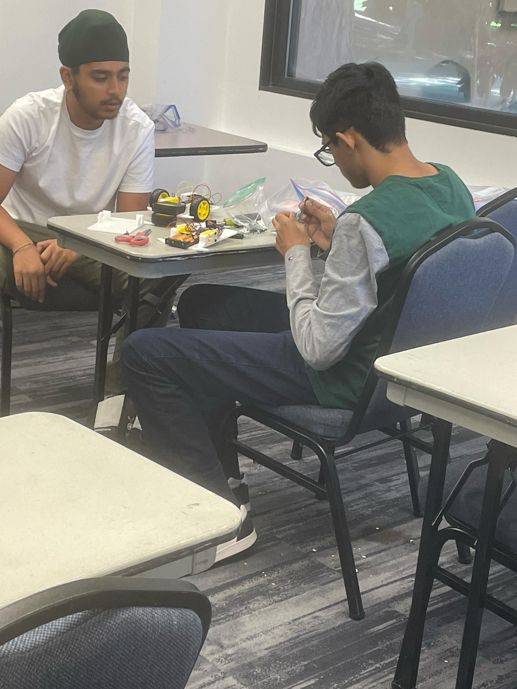

Builder
I turn ideas into working systems.
Robotics • AI • Human-Centered Engineering
I'm a high school student passionate about robotics, reinforcement learning, and human-centered engineering. I enjoy building robots that solve meaningful problems, from assisting first responders and restoring ecosystems to improving mobility and inspiring younger students through STEM education.

The problem
About
I became interested in robotics because I love combining mechanics, electronics, software, and AI to build systems that interact with the physical world. Over the years, I've explored projects ranging from autonomous tree planting and firefighting robots to quadruped research and wearable robotics.
What excites me most is the opportunity to use technology to improve people's lives. I also enjoy sharing engineering with others through free robotics workshops for younger students.
I turn ideas into working systems.
I explore intelligent robotic systems.
I contribute to FIRST Robotics through CAD, electrical systems, and debugging.
I share robotics through free workshops.
Featured Projects
Mobility
Reinforcement learning for intelligent mobility assistance in elderly users.

Safety
Autonomous robot designed to help first responders.

Sustainability
Built to support reforestation efforts.
FIRST Robotics
Design lead in training and electrical lead experience across CAD, wiring, mechanism design, debugging, and competition execution.
FIRST RoboticsCommunity Impact
I founded free hands-on robotics workshops where middle school students learn core engineering concepts, assemble robots, test their designs, and take their builds home.





Awards
Skills
Python • C++ • Java
PyTorch • TensorFlow • OpenCV • Reinforcement Learning
ROS • ROS2 • Gazebo • MuJoCo • Isaac Sim
Arduino • Raspberry Pi • Orange Pi • ESP32 • Sensors
Onshape • Fusion 360 • 3D Printing • CNC • Rapid Prototyping
PCB Design • CAN Bus • Wiring • Motor Control
Contact